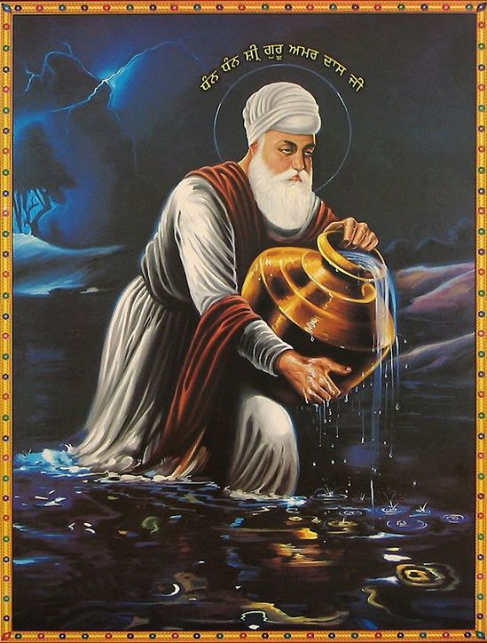

Guru Amardas Ji

Guru Amar Das Ji, the third Sikh Guru, hailed from the Bhalle lineage of the Kshatriya
clan. Born in 1469, he initially followed Hindu rituals but sought spiritual guidance.
Encountering a hymn by Guru Nanak Dev Ji, he approached Guru Angad Dev Ji, becoming a
disciple at 72. For 12 years, he served selflessly in Khadur Sahib before being granted
Guruship at 82. He shifted Sikhi's base to Goindwal Sahib and initiated the Manji System,
educating and spreading Sikh teachings across India. Guru Amar Das Ji prioritized
equality, emphasizing community dining and refused to meet Emperor Akbar until he partook
in Langar. Advocating for women's rights, he denounced the Sati practice, safeguarded
female infants, and elevated women's status, appointing female leaders in Sikh preaching
communities. His passing in 1574 marked a legacy of 21 years as Guru, spanning 105 years
of a remarkable life.